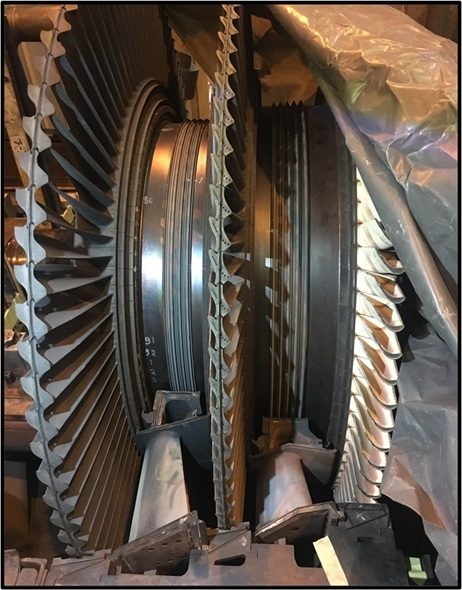
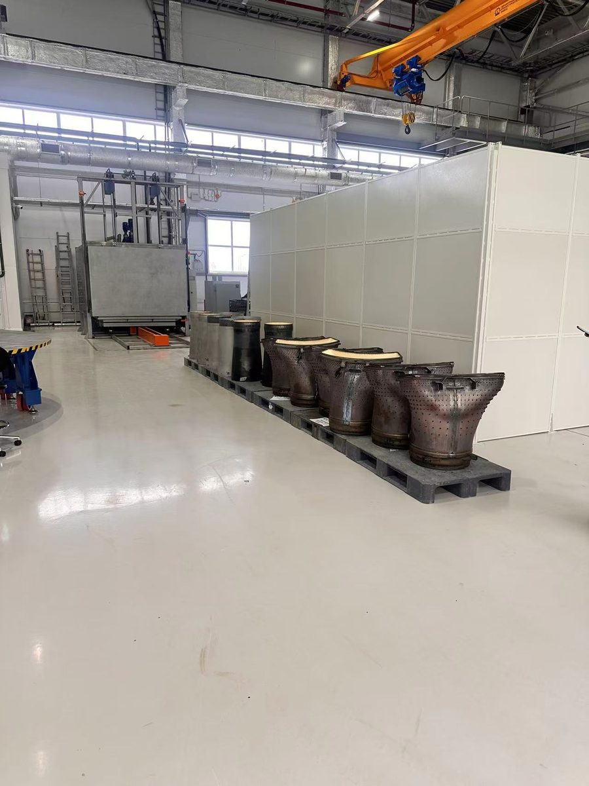
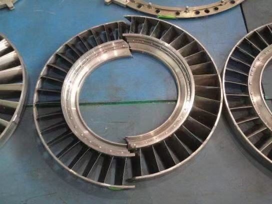
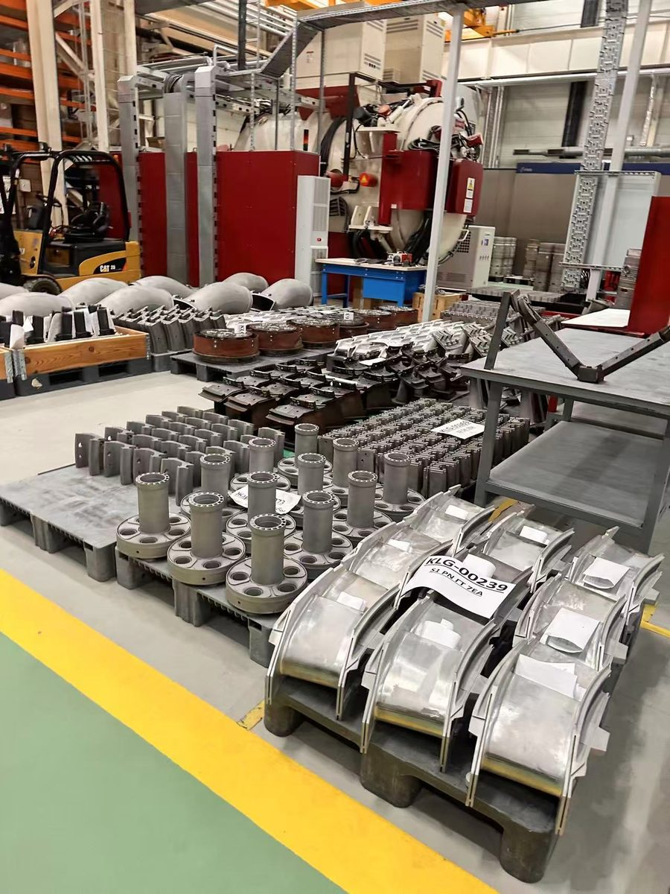
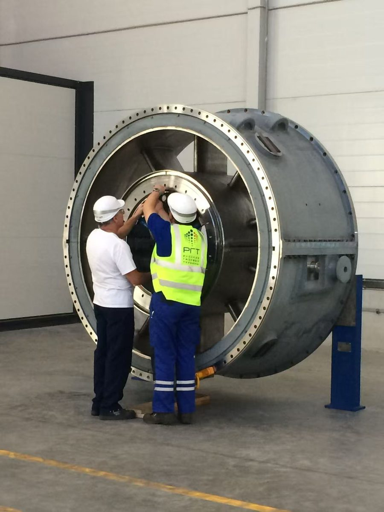
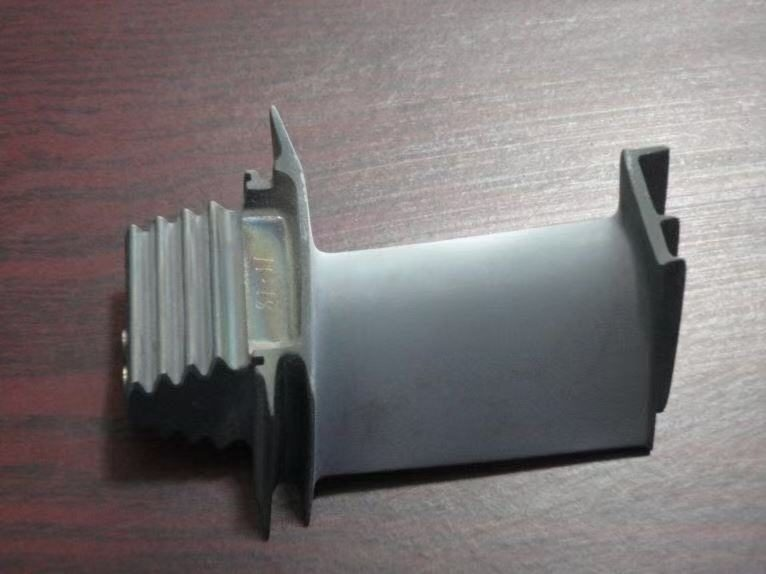

燃气轮机检修服务与延寿
我们为在役工业燃气轮机提供服务，包括 GE、Siemens、Alstom 机型及其衍生机型。目标是保障机组持续运行、为延寿提供技术论证并降低全寿命周期成本。

服务内容
覆盖运行全过程的工程技术支持
01
机组状态检查
孔探检查、仪器检测、缺陷检测与评定，评估热通道部件及转子的实际状态。
02
剩余寿命评估
温度场、蠕变与低周疲劳分析，根据实际等效运行小时数预测轮盘和叶片寿命。
03
延长检修间隔
依据设备实际技术状态，而不仅按规定运行小时数，经技术论证延长大修及检查间隔。
04
热通道部件修复
动叶、导向叶片及燃烧室修复工艺，涂层修复，修理厂及供应商资质鉴定。
05
逆向工程
三维扫描与 CT 断层扫描、三维模型重建，为已停产的零部件出具工艺与修理文件，并开展专利侵权风险排查。
06
故障调查
查明故障原因、计算验证、制定纠正措施。
07
安装、安装督导与调试
安装督导及现场技术指导、机组找正、调试、验收试验大纲与方法。
08
大修与备件
修理技术文件、专用工具及工装设计、施工质量监督、备件供应。
检修
检修工程技术支持
ROTODYN 负责检修的技术部分：从确定工作范围到出具寿命结论。
| 阶段 | ROTODYN 的工作 |
|---|---|
| 开缸前 | 分析运行数据与孔探结果，确定工作范围、备件及专用工具清单。 |
| 缺陷检测 | 编制缺陷清单，并对每个零件给出结论：继续使用、修复或更换。 |
| 修复 | 修理技术文件与修复工艺、涂层要求、修复质量控制。 |
| 装配与启动 | 装配过程中的间隙与找正检查、安装督导、调试、验收试验大纲。 |
| 检修后 | 寿命计算论证，并就大修间隔及检查计划提出建议。 |
现场作业
在役机组现场工作





服务经济性
机组全寿命周期内，大部分收入来自服务
451 亿美元2025 年全球燃气轮机服务市场规模
+10.2%独立服务细分市场年增长率
20–30%独立服务相比原厂服务的成本降幅
66%Siemens Energy 燃气服务板块营收中服务占比（2025 财年）
资料来源: Grand View Research《燃气轮机服务市场报告》（2026）；Siemens Energy 2025 财年年报。
首次合作可以从小项目开始，例如根据已完成检查的数据，对单级进行剩余寿命计算。
告诉我们您的需求
首次沟通免费：通过一至两次通话了解项目内容与限制条件，随后提交包含工作范围、进度和费用的技术建议书。